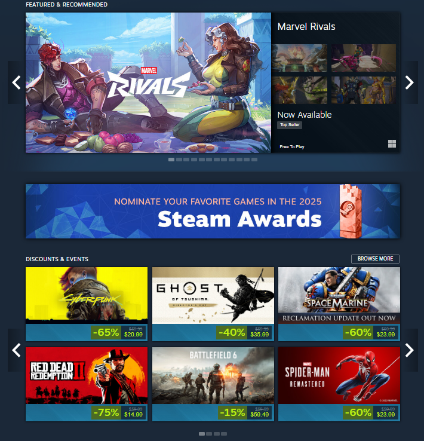
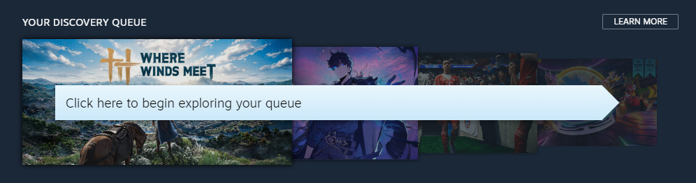
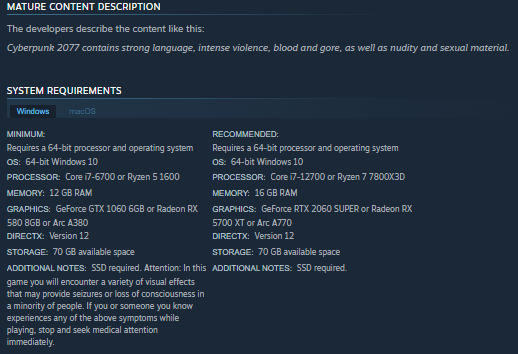
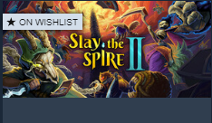

Home
Introduction
For this usability testing project, I selected the Steam Store website (store.steampowered.com). Steam is one of the largest digital stores for PC gaming, with thousands of games, social features, reviews, wishlists, and personalized recommendations.
I chose Steam because it is a busy, complex site with many different user goals. People browse for new games, search for specific titles, compare prices, read reviews, manage their wishlists, and buy games. Since the site is so active and has so many features, it is a good candidate for usability testing. Even small issues can affect how easily users find what they need.
The purpose of this assignment is to build a clear understanding of the usability testing process. This website walks through each step, starting with a heuristic evaluation, then creating personas, writing scenarios, planning the test, moderating the sessions, reviewing the results, and making recommendations for improving the Steam Store.
Reference Text
The project follows the format from Usability Testing Essentials, using the chapters on planning, running, and analyzing usability tests to guide the work on a real website.
Heuristic Evaluation
Website: Steam Store (store.steampowered.com)
Evaluator: Felix Silva
Date: 11/25/2025
Heuristic Evaluation Table
| # | Heuristic Violated | Problem Definition | Detailed Explanation | Severity | Screenshot / Documentation |
|---|---|---|---|---|---|
| 1 | Aesthetic and minimalist design | Homepage is visually crowded and hard to scan. | The homepage shows several large carousels, sale banners, recommendation rows, and promotional blocks. There is little visual hierarchy, and it is easy to scroll past sections without really understanding them. This can slow down both new and experienced users. | Critical |  |
| 2 | Match between system and the real world | Steam specific labels are not clear to new users. | Labels like “Discovery Queue” and “Curator Recommendations” use Steam-specific terminology without any short explanation. A new user may not know what these do or why they should click them. | Major |  |
| 3 | User control and freedom | Users cannot easily exit the Discovery Queue flow. | Once inside the Discovery Queue, users are pushed through a sequence of games. There is no obvious exit control in the view itself, so users rely on the browser or unrelated navigation. This reduces the sense of control. | Major |

|
| 4 | Consistency and standards | Game tiles present information inconsistently. | Some tiles highlight discounts, others screenshots, others tags or reviews. Layout and emphasis vary between sections, making scanning and comparing games harder. | Minor |

|
| 5 | Recognition rather than recall | Filtering tools are hard to find and appear only on certain pages. | Filtering tools do not appear consistently across Steam. On major categories like Action or RPG, no filters are shown at all. To access actual filters, the user must go to specific lists such as “Top Sellers” or “New and Trending.” Only there does a filter panel appear on the right side. Users must remember which sections support filtering instead of recognizing it naturally. This slows navigation and can confuse new users. | Major |

|
| 6 | Help users recognize, diagnose, and recover from errors | Important system requirement warnings can appear too far down the page. | On full game pages, important warnings like third-party account requirements or online-only restrictions appear near the bottom of the long description area. Since Steam pages are dense, these warnings can be easy to miss if a user does not scroll far enough. Although the information is provided, it is not shown near key decision points such as the purchase button. | Major |  |
| 7 | Error prevention | Wishlist actions are easy to miss or misinterpret. | Adding or removing an item from the wishlist only changes a small icon. There is no confirmation or undo message. Users may not notice if the action worked, leading to repeated clicks or accidental changes. | Minor |  |
Summary of Issues Identified
The heuristic evaluation revealed several usability issues across the Steam Store. The homepage is visually dense and difficult to scan, terminology is not always clear to new users, and filtering tools appear inconsistently across pages. Users also have limited control within the Discovery Queue, game tiles present information inconsistently, and important warnings are placed too far down the page. Feedback for wishlist actions is minimal and easy to miss. These issues indicate recurring problems with clarity, consistency, and user control.
Two Personas
Persona 1 - Alex Martinez
New PC Gamer
Demographics: 24 years old, lives with roommates, recent college graduate.
Job / main activity: Entry-level marketing coordinator.
Goals:
- Find affordable games that run well on a mid-level laptop.
- Quickly understand what a game is about and whether it is worth buying.
- Take advantage of sales without feeling overwhelmed.
Environment: Uses Steam at home on a laptop while multitasking.
Technical / product expertise:
- Comfortable with websites and social media.
- New to PC gaming and the Steam ecosystem.
- Still learning terms like curators, Discovery Queue, and tags.
“I just want to quickly find a game I'll actually like without digging through a million confusing pages.”
Persona 2 - Jordan Lee
Experienced Steam User
Demographics: 33 years old, long-time PC gamer, lives with partner.
Job / main activity: Software developer.
Goals:
- Browse sale events efficiently with filters and tags.
- Manage a large wishlist without losing track.
- Quickly see relevant and highly rated games.
Environment: Uses Steam on a desktop PC or TV.
Technical / product expertise:
- Very comfortable with software and game launchers.
- Has used Steam for many years with a large library.
- Understands advanced features but dislikes clutter.
“I know what I like. Just give me powerful filters and a clean way to sort through sales without all the noise.”
Test Plan
Scenarios, tasks, goals, scope, pre-test questionnaire
Test Goals
The goal of this usability test is to evaluate how effectively and efficiently users can discover, evaluate, and manage games on the Steam Store. The test is guided by the 5 Es:
- Effective: Can users complete core tasks.
- Efficient: How much time/effort tasks require.
- Engaging: Whether users stay interested.
- Error-tolerant: How well the site prevents mistakes.
- Easy to learn: How quickly new users understand the site.
Scope, Participants, and Session Length
- Scope: Steam Store homepage, search results, categories, and game pages.
- Participants: 3 users.
- Session length: About 45 minutes each.
- Format: Remote screen sharing with audio and recording.
Scenario 1 - Alex (New PC Gamer)
Alex recently started gaming on PC and wants to find a new game to play over the weekend. They have a limited budget and a mid-range laptop. They want to browse the Steam Store and find something on sale that matches their interests and runs well on their system.
Tasks for Scenario 1
- Find a game under $20 that looks interesting and add it to your wishlist.
- Use search or browsing to find a game in a genre you enjoy.
- Check if your computer can run the game by viewing system requirements.
- Locate user reviews and identify the overall rating.
Scenario 2 - Jordan (Experienced Steam User)
Jordan has used Steam for years and wants to quickly look through a major sale event. They want to find high-discount games in genres they enjoy, avoid duplicates, and stay within a budget. They use filters, tags, and wishlists to help pick what to buy.
Tasks for Scenario 2
- Navigate to the current sale or discounts page.
- Filter games by a preferred genre and apply an additional filter.
- Find a game worth considering and add it to your wishlist or cart.
- Compare two games and decide which one you would choose.
Pre-Test Questionnaire
- How often do you play video games in a typical week?
- How familiar are you with Steam?
- What devices do you usually use for gaming?
- How comfortable are you with online purchasing?
- What types of games do you usually enjoy?
- Have you used the Steam Store website before today?
Moderator Script
Script used for all three sessions
Introduction
Moderator: “Hi, my name is Felix. Today I'll be walking you through a usability session focused on the Steam Store website. Thanks for taking the time to help with this.”
Purpose and Consent
“Before we start, I want to explain the purpose of this session. I'm testing the website, not you. There are no right or wrong answers here. I just want to see how people naturally use the Steam Store and where things feel smooth or confusing. This session will be recorded so I can review it later, but the recording is only for this assignment.”
Warm-Up
“Before we get into the tasks, I want you to get comfortable talking through what you're thinking. This helps me understand your choices and reactions.”
- “What's the last game you played or bought online?”
- “How often do you use Steam or other game stores?”
- “Do you usually browse for games or go straight to something you already know?”
“Great. These help me understand your general habits before we start.”
Think-Aloud Instructions
“Throughout the session, I'd like you to think aloud. Say whatever comes to mind as you're doing the tasks. Tell me what you're expecting, what makes sense, and what doesn't. Even if it feels obvious, just say it out loud. I'm not judging your decisions, I just want insight into your thought process.”
Reminder of Neutrality
“I won't be able to guide you unless you get completely stuck. If I stay quiet, it's on purpose. I'm taking notes and letting you work through the tasks naturally. If you're stuck and not sure what to do next, just say so and I'll give you a small nudge so we can keep going.”
Pre-Test Questions
Ask the questions from the pre-test questionnaire.
Task Instructions
“I'll be giving you a few tasks based on common things people do on the Steam Store. I'll read each one out loud, and I'll also paste them into the chat so you can refer back to them if needed. Remember to think aloud as you work through the tasks.”
Example Tasks
- “You want to find a game under $20 that looks interesting. Use the Steam Store to find one and add it to your wishlist.”
- “Filter a list of games by genre and then sort them by user reviews.”
- “Open a game page and find the system requirements.”
- “Find where Steam explains its refund policy.”
- “Locate a recently released game on the site.”
- "Find information about Steam's VR hardware products"
- “Find where to purchase Steam gift cards or wallet codes.”
- “Locate games that are compatible with SteamOS/Linux.”
During the Session
If the participant goes silent or needs a prompt, use:
- “What are you looking for right now?”
- “What did you expect to happen when you clicked that?”
- “What are you trying to do next?”
- “Is this what you thought you would see?”
Post-Test Questions
After all tasks are complete:
- “How easy or difficult were the tasks?”
- “Which parts felt confusing or unclear?”
- “Was anything missing that you expected to find?”
- “If you could fix one thing on the Steam Store, what would it be?”
Closing
“That's everything for today. Thank you again for your time. Your feedback is really helpful. Before we wrap up, do you have any final thoughts or anything you want to add about your experience using the Steam Store?”
User Videos
User Description Summary
These three participants were selected to reflect a range of Steam experience levels, from a newer user to a long-time PC gamer. Their backgrounds helped highlight different strengths and weaknesses of the Steam Store interface.
User 1: Experienced Steam user, casual gamer, familiar with browsing and buying.
User 2: New to Steam, plays games occasionally, less comfortable with PC platforms.
User 3: Heavy PC gamer, very familiar with Steam and similar game stores.
User #1
Participant summary: 23 years old. Casual gamer who plays a few times a week. Has used Steam for about 11 years. Very comfortable with the platform. Quickly located most information. Had small difficulties finding the filter menu and sorting options. Noted that the Steam catalog layout changes depending on the page, which made browsing feel inconsistent.
User #2
Participant summary: Plays games occasionally, mostly with family. Uses PC and Nintendo Switch. Has never used Steam before. Looked for genres under “Preferences” because it felt like the right place. Had trouble finding system requirements because they are buried in the page. Had the hardest time finding the refund policy and needed direction to locate it. Overall found basic tasks easy, but refund policy visibility was a major issue.
User #3
Participant summary: Plays games almost every day. Very familiar with PC gaming and Steam. Likes FPS and MOBAs. Still struggled to find the price filter because options are not obvious. Also found genre sorting slightly out of the way. System requirements were easy. Refund policy was not obvious, even for an advanced user. Gift cards and wallet codes were harder to locate than expected. SteamOS/Linux games were also not clearly presented.
Findings
Top Findings Overview
Across all participants several common patterns appeared:
- The homepage feels cluttered and makes it hard to pick a starting point.
- Filtering tools are not always visible or easy to find, especially price filters.
- Steam-specific language and sections confuses less experienced users.
- Refund policy is not easy to find for any participant.
- Some sections (SteamOS/Linux, gift cards) are placed in unexpected locations.
User #1 - Findings
Summary: Experienced Steam user. Completed tasks quickly but still had small navigation hiccups.
- Had trouble finding filters and sorting options - 4:28
- Needed several steps to locate refund policy - 7:17-8:39
- Wished category pages used a more compact catalog UI - 11:00-11:36
User #2 - Findings
Summary: New Steam user with no prior experience. Navigated well but struggled with hidden features and unclear terminology.
- Slow to locate genre filters and sorting options - 5:50-6:37
- Needed multiple attempts and menu changes to find refund policy - 9:29-14:40
- Tried several unrelated sections before locating new releases - 15:57-16:42
- VR hardware information found easily once reaching the hardware page - 17:50-18:45
- Noted that the refund policy should be more visible - 23:00-23:34
User #3 - Findings
Summary: Very experienced Steam user who navigated quickly but still struggled with several buried or unclear features.
- Had difficulty locating price filters for games under $20 - 4:50-5:20
- Genre filtering and finding “Top Rated” sorting took extra steps - 8:00-9:10
- Refund policy extremely hard to locate, required search bar - 11:00-13:40
- Gift cards/wallet codes not obvious, resorted to search - 16:40-17:30
- SteamOS/Linux compatibility list was moderately difficult to find - 18:50-19:55
- Commented that the main store is cluttered and hard to tailor to personal needs - 22:40-23:04
Six Recommendations
Based on patterns from all three interviews
My Six Specific Recommendations
- 1. Simplify the homepage layout: Reduce the number of large carousels and banners to make the starting point clearer.
- 2. Add filters directly to the main store page: Users should not need to visit specific categories to access the filter panel.
- 3. Make the refund policy easy to find: Add a link near the purchase button or a dedicated section under Support
- 4. Group system requirements with other key information: Move them into the right-side details panel instead of placing them deep in the description.
- 5. Improve visibility for price filters: Add “Under $20” and other budget shortcuts directly on search and category pages.
- 6. Reorganize secondary sections: Gift cards, SteamOS/Linux games, and wallet code pages should be easier to locate without searching.
Self Reflection
Lessons Learned
This project provided a clearer understanding of the structured workflow that supports effective usability testing. Completing the heuristic evaluation, personas, scenarios, and recorded sessions showed how interface issues become visible only when real users perform tasks. Even with a familiar website such as the Steam Store, the process revealed usability gaps related to navigation, filtering, terminology, and information placement.
Moderating the sessions improved my awareness of how the facilitator influences outcomes. Remaining neutral, avoiding unintended guidance, and asking follow-up questions required careful attention. This displayed the importance of standardized test procedures for producing reliable data.
Final Thoughts on Usability Testing
The project demonstrated the practical value of observing users directly. Participants approached tasks differently based on experience level, and these differences highlighted specific areas where the interface created friction. Overall, the assignment and class strengthened my ability to plan, conduct, and analyze usability tests and emphasized their role in improving real-world digital interfaces.